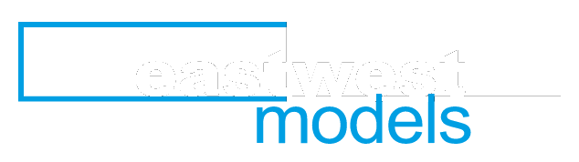
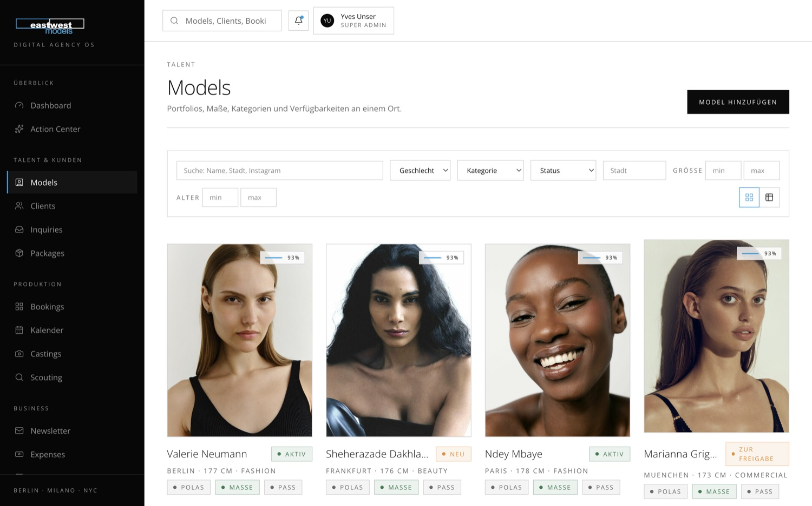
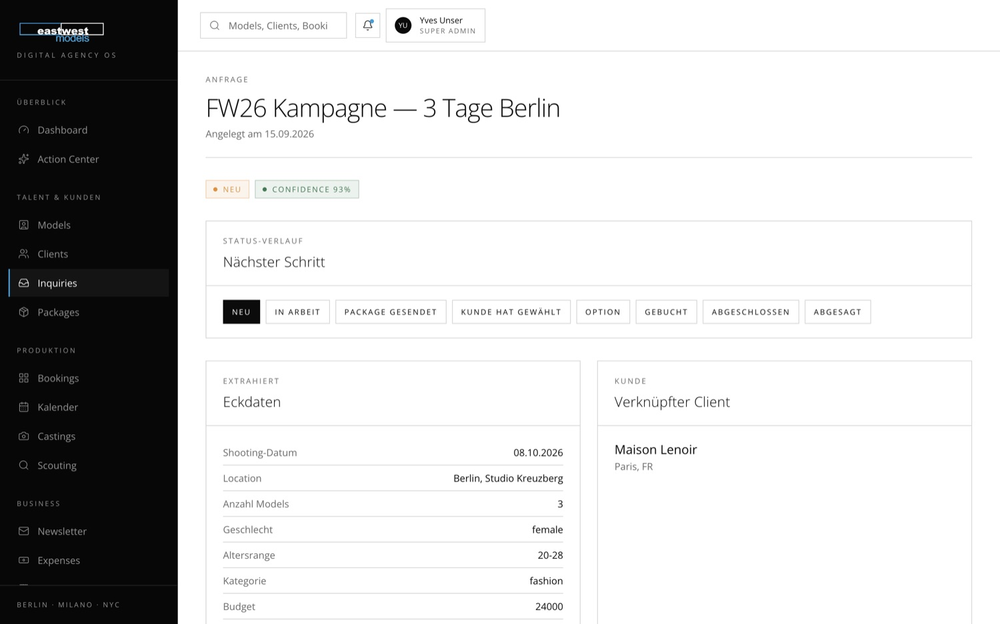
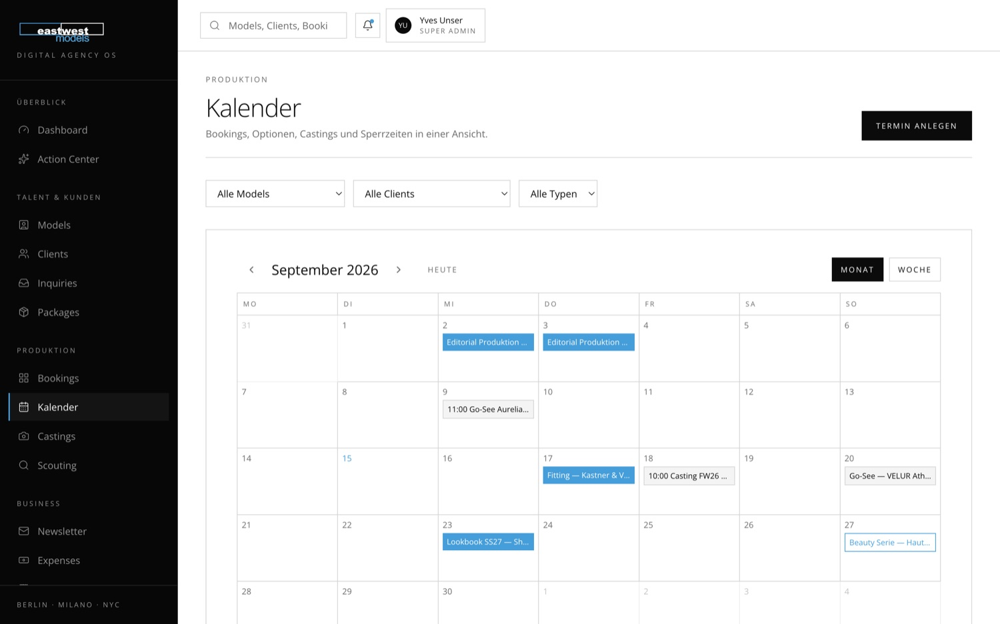
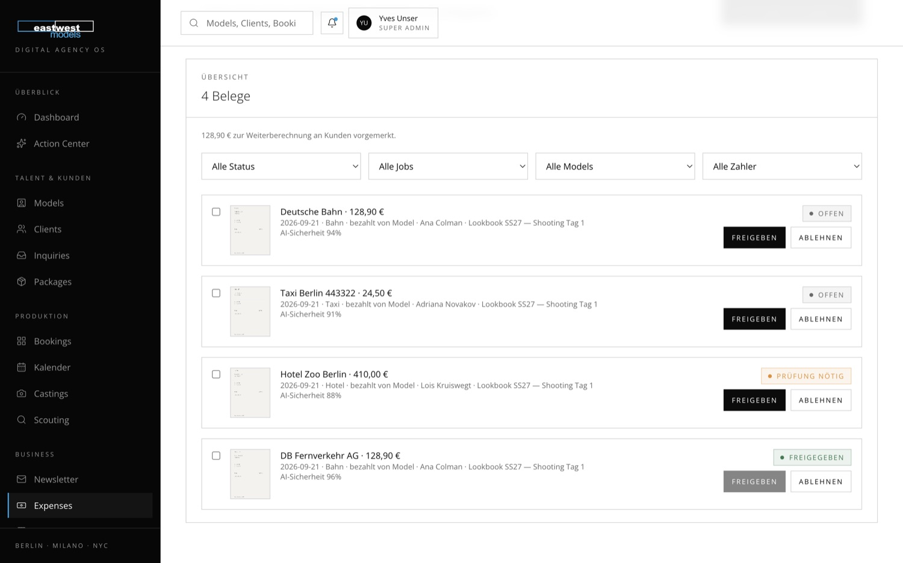

What makes a great beauty model?
Drei Kriterien, die kein Portfolio zeigt — Symmetrie im Close-up, Ausdruck ohne Überspielen, Konsistenz nach sechs Stunden am Set.

Angebot 2026 · Unser VenturesZwei Angebote für East West Models: ein eigenes Betriebssystem statt Mediaslide-Miete — und ein Instagram-Kanal, der Kundenanfragen erzeugt statt nur Models zu zeigen. Beide vollständig auf dieser Seite, mit abspielbaren Beispiel-Reels und Ansichten aus dem laufenden System.
01 — Ausgangslage
Und sie fließt heute in Arbeit, die eine Maschine übernehmen kann.
East West Models arbeitet heute mit Mediaslide plus vielen manuellen Prozessen: Datenpflege, Pola-Nachforderungen, Verfügbarkeitsabfragen, Package-Erstellung, Newsletter, Rechnungsvorbereitung, Belegzuordnung. All das kostet Booker-Zeit, die nicht in Kundengewinnung und Bookings fließt.
Das Angebot: Ein eigenes, AI-natives Betriebssystem, das Mediaslide vollständig ersetzt und deutlich darüber hinausgeht. Daten werden einmal erfasst und überall intelligent genutzt — von der Anfrage über Casting, Booking und Reise bis zu Rechnung, Referenz und Newsletter.
| Manuelle Aufgabe heute | Std./Wo.* | Im Agency OS | Std./Wo.* |
|---|---|---|---|
| Modeldaten & Maße pflegen, Polas nachfordern | 4,0 | Model pflegt selbst im Portal, System erinnert automatisch | 0,5 |
| Anfragen aus dem Postfach erfassen, Models zusammensuchen | 4,0 | Anfrage wird automatisch aus dem verbundenen Postfach gelesen, AI schlägt Models mit Match-Score vor | 1,0 |
| Packages bauen und versenden | 3,0 | Auswahl aus dem Matching → Link in Minuten | 0,5 |
| Verfügbarkeiten abfragen, Doppelbuchungen klären | 3,0 | Kalender mit automatischem Konflikt-Check | 1,0 |
| Belege sortieren, Rechnungen vorbereiten | 4,0 | AI liest Belege, erstellt Rechnungsentwurf | 1,0 |
| Newsletter & Kunden-Follow-ups | 2,0 | AI-Entwurf aus echten Agenturdaten, Booker gibt frei | 0,5 |
| Summe | 20,0 | Verbleibend | 4,5 |
*Schätzung auf Basis typischer Agenturabläufe dieser Größe, nicht gemessen bei East West. Amortisation gerechnet mit 30 €/Std. interner Kosten: ca. 1.800 €/Monat eingesparte Arbeitszeit gegenüber 18.900 € einmalig zzgl. Betrieb. Die tatsächlichen Werte klären wir im Discovery-Workshop.
02 — Das System
Alle Abbildungen zeigen Ansichten im Branding von East West Models — gleiche Wortmarke, gleiche Hausfarbe, gleiche Typografie. Kein generisches SaaS-Interface, sondern eine Oberfläche, die zur Agentur passt.




03 — Ein Tag im System
Beispielhafter Ablauf einer Kampagnenanfrage — durchgehend im selben System, ohne Excel, ohne Mail-Pingpong.
Das Agentur-Postfach ist mit dem System verbunden. Die Mail wird automatisch erkannt und ausgelesen: Kunde, Shootingtage, Location, Anzahl Models, Budgetrahmen und Usage — samt Liste dessen, was im Brief fehlt („Buyout-Dauer nicht genannt“). Niemand tippt etwas ab. Der Booker prüft nur, ob alles korrekt übernommen wurde, und gibt frei.
Das System durchsucht die gesamte Kartei und schlägt Models mit Match-Score vor, jeweils mit Begründung („Why this model?“) und Warnhinweisen, etwa wenn Polas veraltet sind oder der Pass in Kürze abläuft.
Booker wählt aus, ergänzt ein Wort zur Auswahl, versendet einen eleganten Link im East-West-Design. Kein PDF-Anhang, keine WeTransfer-Links.
Der Kunde öffnet das Package. Der Booker sieht es live, sieht welche Models geliked wurden — und ruft im richtigen Moment an.
1. Option wird gesetzt, das System prüft automatisch gegen Doppelbuchungen. Bei Bestätigung erhalten die Models automatisch Call Time, Location und Ansprechpartner.
Models laden Belege im Portal hoch, die AI liest Anbieter, Betrag und Datum, ordnet dem Job zu und erkennt Doppelerfassungen. Der Rechnungsentwurf entsteht automatisch aus Gage, Provision, Buyout und Spesen.
Die Kampagne landet als Referenz im Modelprofil, der Kunde in der Reaktivierungs-Logik. Ein „New Face“-Newsletter-Entwurf inklusive passender Kundenempfehlung liegt zur Freigabe bereit.
04 — Module
Stufe 1 bildet den kompletten Kern-Workflow ab, Stufe 2 den Ausbau um Marketing, Verträge und Auswertung.
| Modul | Was es kann | Verbesserung ggü. Mediaslide |
|---|---|---|
| Foundation & Sicherheit | Login, 8 Rollen (Admin, Booker, Scout, Accounting, Marketing, Model, Client), granulare Rechte, Mandantenfähigkeit | DSGVO-konform, EU-Hosting, volle Datenhoheit |
| Model Database | Profile, Maße mit Historie, Portfolio/Polas/Digitals, Dokumente mit Ablaufdaten, Skills, Rates | Vollständigkeits-Score pro Profil, alles verknüpft |
| Model Portal + Self-Onboarding | Jedes Model pflegt Profil, Fotos, Maße, Dokumente selbst; Onboarding-Wizard per Link | Booker tippt keine Modeldaten mehr ein — Model liefert, Booker gibt frei |
| Aktualitäts-Engine | Ampel-Status für Polas / Maße / Pass; automatische Reminder mit Eskalation an den Booker | Mediaslide erinnert niemanden — hier bleibt die Kartei von selbst aktuell |
| Client CRM (Client 360) | Kunden, Kontakte, Aktivitäten, Segmente, „nächste Aktion“, Inaktivitäts-Erkennung | Vollwertiges CRM statt Adressliste |
| E-Mail-Anbindung | Agentur-Postfach einmalig verbinden (Google Workspace / Microsoft 365 / IMAP). Eingehende Anfragen werden automatisch erkannt, ausgelesen und als Anfrage angelegt — inklusive Anhängen. Regeln legen fest, welche Postfächer und Absender erfasst werden | Gibt es in Mediaslide nicht — die Anfrage ist im System, bevor sie jemand gelesen hat |
| AI Brief-Analyse | AI extrahiert Kunde, Datum, Location, Models, Budget, Usage; erstellt Rückfragen zu fehlenden Punkten. Booker prüft die Übernahme und gibt frei | Gibt es in Mediaslide nicht |
| AI Model Matching | Brief → Match-Score pro Model mit Begründung „Why this model?“ und Warnungen | Gibt es in Mediaslide nicht — Kernstück des Systems |
| Packages & Client-Ansicht | Kuratierte Auswahl als eleganter Link; Kunde liked, kommentiert, bestätigt | Hot-Lead-Tracking: Booker sieht live, wann der Kunde öffnet |
| Booking Engine + Kalender | Optionen, Bookings, Drag&Drop-Kalender, automatische Model-Info (Call Time, Location) | Automatischer Konflikt-Check gegen Doppelbuchung |
| Casting Management | Castings mit Slots, Attendance am Handy abhaken, Feedback, Ergebnis → ein Klick zur Option | Mobiler Casting-Tag-Workflow |
| AI Expense Management | Beleg-Upload → AI liest Anbieter/Betrag/Datum, ordnet Job zu, erkennt Duplikate | Gibt es so nirgends am Markt |
| Billing & AI-Rechnungen | Rechnungsentwurf aus Gagen, Provision, Buyout, Spesen; AI-Prüfung; PDF; Model Statements | Schnellere, fehlerärmere Abrechnung |
| AI Action Center + Daily Briefing | Eine Startseite mit allen offenen Freigaben und Deadlines — Approve / Edit / Reject | Gibt es in Mediaslide nicht |
| Modul | Was es kann |
|---|---|
| Newsletter + AI | Segmentierte Verteiler (Fashion, Beauty, VIP …), Editorial-Templates, Open-/Click-Tracking; Automation: neues Model freigegeben → „New Face“-Entwurf inkl. passender Kunden-Empfehlung |
| Client Reactivation | AI erkennt „Kunde X hat seit 8 Monaten nicht gebucht“ → fertiger Follow-up-Entwurf |
| Verträge & E-Signatur | Templates mit Auto-Befüllung aus dem Booking, digitale Unterschrift per Link, Ablauf-Reminder |
| Job Memory + References + Assets | Jede Kampagne als digitale Akte; automatischer Referenz-Vorschlag fürs Modelprofil; Kampagnenbilder mit Rechte-Management |
| Scouting | Öffentliches Bewerbungsformular, Kandidaten-Pipeline, AI-Ersteinschätzung, ein Klick zum Model-Onboarding |
| Business Intelligence | Dashboards: Umsatz, Bookings, Top-Kunden, Top-Models, Conversion, offene Posten |
05 — Einordnung
Marktübliche Preise einer klassischen Software-Agentur (DE, Sätze 90–140 €/Std.), wenn jedes Modul einzeln beauftragt würde.
| Modul | Einzelpreis klassische Agentur |
|---|---|
| Foundation, Auth, Rollen, Mandantenfähigkeit | 12.000 – 18.000 € |
| Model Database inkl. Medienverwaltung | 10.000 – 16.000 € |
| Model Portal + Onboarding + Reminder-Engine | 8.000 – 14.000 € |
| Client CRM | 8.000 – 12.000 € |
| E-Mail-Anbindung mit automatischer Anfragen-Erfassung | 7.000 – 12.000 € |
| AI Brief-Analyse + Model Matching | 12.000 – 20.000 € |
| Packages + Client-Ansicht + Tracking | 6.000 – 10.000 € |
| Booking Engine + Kalender + Castings | 15.000 – 25.000 € |
| Expense-Management mit AI-Belegerkennung | 8.000 – 14.000 € |
| Billing, Rechnungen, Model Statements | 10.000 – 16.000 € |
| AI Action Center + Daily Briefing + Notifications | 6.000 – 10.000 € |
| Newsletter-System + AI-Generator | 6.000 – 10.000 € |
| Verträge + E-Signatur | 5.000 – 8.000 € |
| Job Memory, References, Asset-/Rechte-Management | 6.000 – 10.000 € |
| Scouting | 4.000 – 6.000 € |
| Summe klassisch · Laufzeit 9–15 Monate, Team aus 3–5 Personen | 123.000 – 201.000 € |
Warum dieses Angebot einen Bruchteil kostet: AI-gestützte Entwicklung statt manuellem Coden im Stundensatz-Modell. Gleiche Funktionalität, moderner Stack, ein Ansprechpartner statt Agentur-Overhead.
Mediaslide veröffentlicht keine Preise (nur „Request a demo“). Marktüblich für Agentursoftware dieser Klasse (Mediaslide, Syngency, Netwalk u. a.): ca. 300 – 800 €/Monat je nach Agenturgröße und Modulen — Schätzwert, als solcher gekennzeichnet.
| Mediaslide (Miete) | EASTWEST Agency OS | |
|---|---|---|
| Eigentum | Nie — Miete auf ewig | Gehört East West |
| Postfach-Anbindung: Anfragen automatisch erfassen | Nein | Ja |
| AI Brief-Analyse & Matching | Nein | Ja |
| Automatische Pola-/Dokument-Reminder | Nein | Ja |
| AI-Rechnungsentwürfe + Spesen-OCR | Nein | Ja |
| Package-View-Tracking (Hot Leads) | Nein | Ja |
| AI Newsletter + Kunden-Reaktivierung | Nein | Ja |
| Action Center / Daily Briefing | Nein | Ja |
| Anpassbar an eure Workflows | Kaum | Vollständig |
| Datenhoheit / EU-Hosting | Anbieterabhängig | Ja, eigene Datenbank |
| White-Label-Weiterverkauf | Unmöglich | Möglich (Option) |
| Kosten über 5 Jahre | ca. 18.000 – 48.000 € Miete* | 18.900 € einmalig + Betrieb |
*Schätzung auf Basis marktüblicher Preise, da Mediaslide nur auf Anfrage anbietet.
Hier entsteht ein eigenes Asset — mit AI-Funktionen, die es dort schlicht nicht gibt.
06 — Investition
Alles auf einmal — oder Schritt für Schritt mit dem Kern beginnen.
Raten fällig bei Auftragserteilung, Go-Live Kern-System und Abnahme Vollausbau. Ersparnis gegenüber Schritt-für-Schritt-Aufbau: 4.500 €.
Damit ist der Kern-Workflow vollständig: Anfrage → AI-Matching → Package → Booking. Alles Weitere lässt sich danach einzeln ergänzen.
| Erweiterung | Preis |
|---|---|
| Finance-Paket: AI-Spesen-Erkennung + Billing + AI-Rechnungen + Model Statements | 3.900 € |
| AI Cockpit: Action Center + Daily Briefing + Notification Engine | 2.400 € |
| Newsletter + AI-Generator + Client Reactivation | 2.400 € |
| Verträge + E-Signatur | 1.900 € |
| Job Memory + References + Asset-/Rechte-Management + Scouting + Business Intelligence | 2.900 € |
| Starter + alle Erweiterungen | 23.400 € |
| Zum Vergleich: Paket A Komplett | 18.900 € |
Starter: 350 €/Monat · Vollausbau: 500 €/Monat netto (Mindestlaufzeit 12 Monate, danach monatlich kündbar):
Größere neue Features nach Aufwand oder als Festpreis-Paket.
| Option | Preis |
|---|---|
| Content-Engine / Instagram-Automation (Anbindung bestehende Pipeline) | 4.900 € + 200 €/Monat |
| White-Label-Ausbau (Tenant-Verwaltung, Branding, Subdomains) — East West lizenziert das System an Partneragenturen | 9.900 € einmalig |
| Campaign-/Web-Monitoring | auf Anfrage |
07 — Ausblick
Das System ist von Tag 1 mandantenfähig gebaut. East West kann es unter eigener Marke an Partneragenturen lizenzieren.
Jede Modelagentur hat dieselben Probleme: Mietsoftware ohne Eigentum, keine AI, Datenpflege von Hand. Die Architektur dieses Systems trennt Mandanten bereits vollständig voneinander — Daten, Nutzer, Rechte und Branding sind pro Agentur isoliert. Was dafür noch fehlt, ist die Vermarktungsschicht: Tenant-Verwaltung, eigene Subdomain je Agentur, Logo- und Farbübernahme, Abrechnung.
| Szenario | Agenturen | Lizenz je Monat | Erlös pro Jahr |
|---|---|---|---|
| Erste Partner aus dem eigenen Netzwerk | 3 | 390 € | 14.040 € |
| Etabliert im DACH-Markt | 8 | 390 € | 37.440 € |
| Mit größeren Häusern und Zusatzmodulen | 15 | 490 € | 88.200 € |
Rechenbeispiel, keine Zusage. Die Lizenzhöhe orientiert sich am unteren Rand marktüblicher Agentursoftware (ca. 300–800 €/Monat). Nicht enthalten: Vertrieb, Support der Partneragenturen, anteilige Infrastruktur- und AI-Kosten je Mandant.
08 — Ablauf
Parallelbetrieb statt Risiko-Umstieg: Mediaslide wird erst gekündigt, wenn das Team vollständig umgestellt ist.
| Phase | Inhalt | Dauer |
|---|---|---|
| Kickoff | Discovery-Workshop: Workflows, Mediaslide-Export, Prioritäten | Woche 1 |
| Stufe 1 | Kern-System bis Go-Live | Woche 2–7 |
| Parallelbetrieb | System läuft neben Mediaslide, Daten migriert, Team eingewiesen | Woche 6–8 |
| Stufe 2 | Newsletter, Verträge, References, Scouting, BI | Woche 8–13 |
| Mediaslide-Kündigung | Sobald das Team vollständig umgestellt hat | ab Woche 10 |
Nächste Schritte